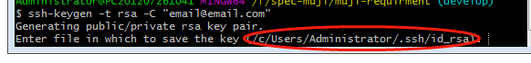
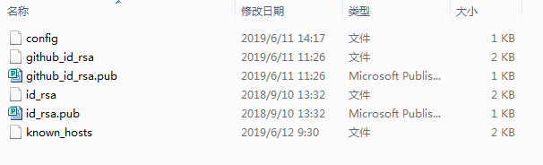

SSH
1. 概念
SSH 为 Secure Shell 的缩写，由 IETF 的网络小组（Network Working Group）所制定；SSH 为建立在应用层基础上的安全协议。SSH 是目前较可靠，专为远程登录会话和其他网络服务提供安全性的协议。利用 SSH 协议可以有效防止远程管理过程中的信息泄露问题。SSH最初是UNIX系统上的一个程序，后来又迅速扩展到其他操作平台。SSH在正确使用时可弥补网络中的漏洞。SSH客户端适用于多种平台。几乎所有UNIX平台—包括、Linux以及其他平台，都可运行SSH。
2. 安全验证
SSH验证：从客户端来看，SSH提供两种级别的安全验证。
第一种级别（基于口令的安全验证）
只要你知道自己帐号和口令，就可以登录到远程主机。所有传输的数据都会被加密，但是不能保证你正在连接的服务器就是你想连接的服务器。可能会有别的服务器在冒充真正的服务器，也就是受到“中间人”这种方式的攻击。
第二种级别（基于密匙的安全验证）
需要依靠密匙，也就是你必须为自己创建一对密匙，并把公用密匙放在需要访问的服务器上。如果你要连接到SSH服务器上，客户端软件就会向服务器发出请求，请求用你的密匙进行安全验证。服务器收到请求之后，先在该服务器上你的主目录下寻找你的公用密匙，然后把它和你发送过来的公用密匙进行比较。如果两个密匙一致，服务器就用公用密匙加密“质询”（challenge）并把它发送给客户端软件。客户端软件收到“质询”之后就可以用你的私人密匙解密再把它发送给服务器。 用这种方式，你必须知道自己密匙的口令。但是，与第一种级别相比，第二种级别不需要在网络上传送口令。

3. 命令
3.1 查看当前电脑所有的ssh:ls -al ~/.ssh
3.2 一台电脑上github和gitlab配置ssh
- 如果没有生成过
.ssh文件，就要执行$ ssh-keygen -t rsa -C "email@email.com"来创建.ssh，如果当前是为github生成，使用github的邮箱，如果是gitlab则输入gitlab的邮箱; - 下面你会看到下图，如果只是配置一个
github或者gitlab直接回车就可以了，如果是想同时配置则需要修改生成的id_rsa，以上面为例子，可以输入/c/Users/Administrator/.ssh/github_id_rsa后回车,这里的github_id_rsa你可以自己去定义  - 接下来直接回车就ssh的秘钥就生成了
- 如果是自己输入了秘钥名称则需要配置一个config文件,里面配置如下(其中.ssh目录如下)

# gitlab Host gitlab.com HostName gitlab.com PreferredAuthentications publickey IdentityFile ~/.ssh/id-rsa # github Host github.com HostName github.com # User WebMrYang PreferredAuthentications publickey IdentityFile ~/.ssh/github_id_rsa - 当完成以上的
ssh秘钥生成后，我们就可以给github或者gitlab来配置公钥了，公钥的后缀是.pub,复制.pub文件中的公钥，登陆你的github帐户。点击你的头像，然后Settings-> 左栏点击SSH and GPG keys-> 点击New SSH key新建公钥title可以随便输key就是你刚刚新建的公钥 - 可以测试下
ssh git@github.com如果输出Hi xxx! You've successfully authenticated, but GitHub does not # provide shell access. Connection to github.com closed.说明成功了如图：